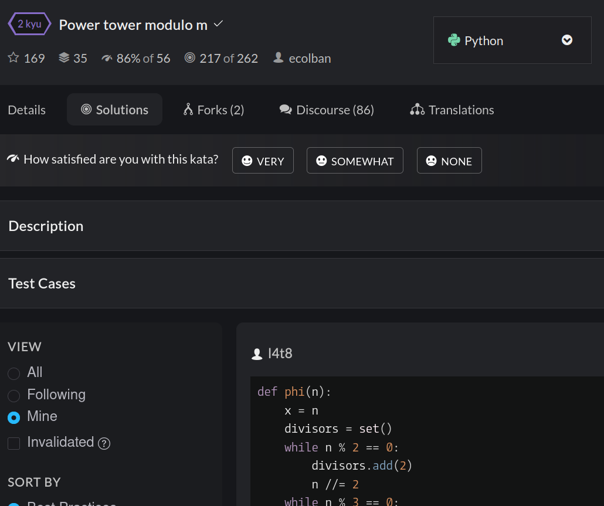

Utilizando mis habilidades en el lenguage de programación python,
fui capaz de resolver un total de 179 problemas de programación, denominados "katas". No hay
una única solución a un kata, sino varias maneras (unas más originales que otras)
para llegar al mismo resultado. Por ejemplo, para hacer un automatizar el desarrollo de un binomio
de Newton, se puede utilizar la fórmula que se enseña en bachillerato, o uno mismo puede idear un
algoritmo que vaya multplicando polinomios entre si. Cada problema se subdivide en pequeños subproblemas
que requieren de diversas soluciones, la manera en la que se abordan estos pequeños problemas constituye
un ejercicio de creatividad, pues la resolución de problemas requiere necesariamente de imaginación e
inventiva. Los katas que resolví que más se destacan son tres: el primero,
consistió en simular otro
lenguaje de programación(assembly) dentro del lenguaje python; el segundo,
crear una calculadora que pueda
realizar operaciones como las haría un niño de primaria y el tercero, resolver un problema de teoría de números
e integrar la solución en un lenguaje de programación. Mi perfil de codewars. La resolución de los 179 problemas
me llevó una cantidad de tiempo sustancial y crecí en mi capacidad de crear programas, y en particular, en el desarrollo
de soluciones realmente interesantes. Esto se debe a que aborrezco los cursos de programación
y todos los problemas los resolví con mi propio ingenio, sin hacer uso de algoritmos memorizados ni ayudas
externas. Es por ello que considero que estos problemas han servido para fomentar mi capacidad para crear,
y ahora mismo me siento muy capaz de desarrollar soluciones ingeniosas y alternativas a cualquier problema
que se me pueda presentar.

Kata de teoría de números
Kata simulando assembly
Kata recreando una calculadora
Los 179 Katas realizados forman parte de mi día a día y de mi afán por encontrar soluciones alternativas a problemas complejos.
Semanalmente, tomaría un descanso académico para adentrarme en el mundo de la resolución de dichos problemas y fomentar y mejorar
consistentemente mis habilidades relacionadas con la creatividad. Por ejemplo, un Kata menos complicado, pero igualmente curioso como
el problema de "Snail", que consiste en generar un dibujo en una matriz de números que tome la forma de un caracol, puede resolverse
de varias maneras. En mi caso, como nunca he mirado un solo libro de algoritmos, empecé a ingeniármelas para dar con una solución
que podría entenderse como dicha serpiente chocándose contra todas las paredes, en vez de el método usual que consiste en la generación de la
matriz con la serpiente ya "dibujada". Cientos (sin exagerar) de ejemplos como se hallan en mis soluciones y responden a mi
crecimiento intelectual creativo.
Concursos de codewars
El 25 de febrero, asistí con mis compañeros (Ramiro 2) del taller de programación Sui géneris al concurso de programación organizado
por codewars. Haber practicado tanto con mis compañeros dió sus frutos y quedamos cuartos de treinta equipos. La competición constaba de
treinta problemas matemáticos para los cuales se requería ingeniar algoritmos. Me siento particularmente orgulloso de un problema que consistía
en averiguar si un tablero de ajedrez era una posición válida o no. Mientras pensaba el problema recordé que podía transformar todo el tablero en
una línea de texto y contar la cantidad de piezas con un método para contar la cantidad de letras. Fue una experiencia gratificante, y un buen ejercicio
de nuestras capacidades mentales.
El 17 de febrero sucedió la edición del 2024 de codewars, y como no volvimos a participar el mismo equipo. Esta vez quedamos octavos, pero no porque
nosotros hubiéramos empeorado sino porque la competición fue extremadamente ardua. Los problemas este año requerían una memorización de algoritmos que
nosotros no teníamos, pero volvimos satisfechos al haber resuelto problemas nunca antes vistos de maneras que inventamos nosotros. Recuerdo el éxtasis
momentáneo al conseguir la solución para el penúltimo problema. Destacaría que nuestro bajo resultado se debía a que nosotros dependíamos en la creatividad
adquirida mediante la práctica más que en llevar un montón de algoritmos hechos en un pen drive, como los cinco primeros equipos.
Codewars 2023
Codewars 2024
La creación de páginas web
Crear esta página web es también un ejercicio de creatividad. Anteriormente a crear este diseño me planteé como quería
que fuera el diseño para mi carpeta CAS. Después lo expresé creando el código
para la página. Absolutamente todas las características
de esta página las he decidido yo. Por ejemplo, si quiero
que este texto sea rojo, o si quiero que sea
azul, un link y un poco más grande , puedo hacerlo. Todas estas ideas, las integro haciendo
uso del lenguage de programación css y html (este último no es un lenguaje,
es un marcador de hipertexto). Utilizo el html para darle estructura a la página
y el css para darle estilo a todo. No solo el diseño de la página lo he creado yo
sino que, al igual que programando python, hay distintas maneras de implementar una idea. Además, el diseño y la distribución
de contenidos que he escogido contribuyen a darle un estilo minimalista a la página.
La creación de esta pagina web me facilitará
la creación de otras páginas en el futuro, además de fomentar mi creatividad artística.
Si quieres ver el código para esta página web, basta con hacer click derecho y clickar en
inspeccionar, para ver todo el trabajo realizado. Aproximadamente, esta página web me ha requerido
escribir unas 1250 líneas de código que, aunque utilice los lenguajes de html y css, es una cantidad
considerable de tiempo que refleja el ejercicio creativo que he realizado.
Además de esta página web, estoy diseñando e implementando la página web para el grupo scout al que
pertenezco. El proceso de creación de dicha página es extremadamente cansado, al tener que coordinarme
con todas las unidades de mi grupo y con los jefes para poder cambiar detalles nimios (la página es exigente).
La página se encuentra en este link, pero también en la imagen de abajo.
Esta página también se hizo con html y css, lo que conlleva que la programación de la página sea más creativo,
como se ha dicho para la página anterior.
Además, se puede apreciar que el estilo de esta página web es considerablemente más bonito que el de esta, pues
lo confeccioné con otros jefes que me indicaron cuáles eran las necesidades del grupo scout al que pertenezco. Esta
actividad también podría considerarse servicio, pero está al límite de no serlo pues yo me beneficio de los scouts a
los que asisto.
Elaborar estas páginas web ha sido muy cansado y díficil, pues empecé el bachillerato internacional
sin un ápice de conocimiento acerca de html y css, lo que me ha forzado a desarrollar nuevas habilidades y aprender nuevos
conceptos con el tiempo, para poder satisfacer las necesidades artísticas de las páginas que elaboro. Además, esta página
ha sido un trabajo transversal a todo el programa CAS, pues estará terminada cuando termino el BI, aunque quizás añada más cosas
que haga en un futuro.
Editaje de vídeos
Siempre he sido un consumidor habitual de memes, pero nunca
me había planteado crearlos yo mismo. Me instalé el programa
shotcut y diseñé unos vídeos que siguen un estilo de meme
llamado "slander" que consiste en despotricar contra alguien
o una cosa. A lo largo del curso, hice cinco "slanders" de los
sucesos que ocurrían en nuestra clase: uno de filosofía, otro sobre los talleres CAS
y otros tres sobre los sucesos ocurridos en nuestra clase la del W. Se pueden
encontrar todos en esta página de instagram, aunque abajo se adjunta uno de ellos.
Aparte de los memes, utilicé mis habilidades para crear un
video para ilustrar mi travesía de la línea 6.
Finalmente, se me pidió que hiciera un último slander para la graduación de la generación 21-23
que hice para satisfacer el deseo de los delegados.
En total las longitud de los vídeos que he creado alcanzará los 15 minutos. Arriba solo se muestran unos ejemplos (porque sino
la página web no carga) y no ejemplifican bien cómo ha sido mi jornada. Editar vídeos es un proceso bipartita, involucra el pensar
primero lo que se va a hacer y luego ejecutarlo. Con respecto a la primera parte, considero que he ido adquiriendo madurez con el
tiempo al entender como causar al máximo impacto o cómo generar diversas sensaciones. Los dos primeros vídeos constituyen un ejemplo
de mis primeras obras, mientras que el último es el resultado de bastante trabajo. La segunda parte, consiste en la ejecución de
lo planificado, que me obligó a familiarizarme con el programa shotcut y me aportó una nueva habilidad de cara a futuro. Esta nueva
destreza la fui adquiriendo progresivamente, mejoré en mi rapidez y efectividad a cada slander que hacía.